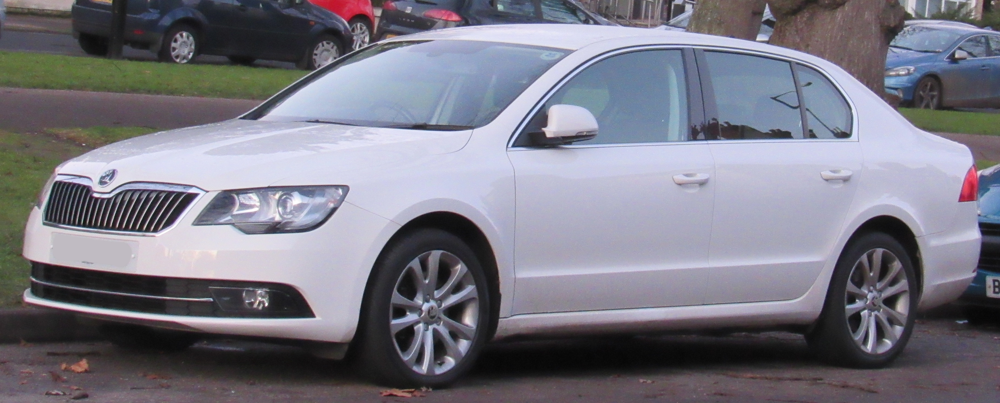

Historia SuperB
Škoda Superb II została po raz pierwszy oficjalnie zaprezentowana podczas targów motoryzacyjnych w Genewie w 2008 roku. Samochód został zbudowany na bazie niemieckiej płyty podłogowej Volkswagen AG o nazwie PQ46 wykorzystanej do budowy m.in. Volkswagena Passata B6, Audi A4 B8 oraz Seata Alhambra i Volkswagena Sharana. W przeciwieństwie do pierwszej generacji pojazdu, auto jest liftbackiem posiadającym sylwetkę klasycznego sedana dzięki zastosowaniu innowacyjnego systemu otwierania klapy bagażnika, którą można unieść samą lub wraz z szybą. W 2009 roku podczas targów we Frankfurcie zaprezentowano wersję kombi pojazdu. W 2013 roku przeprowadzono face lifting pojazdu. Zmodernizowany został m.in. pas przedni pojazdu w którym zastosowane zostały nowe reflektory przednie w które wkomponowano światła do jazdy dziennej wykonane w technologii LED oraz zderzak, atrapę chłodnicy oraz pokrywę silnika. Zmianom poddano także pas tylny, przy czym znacznie poważniejszych zmian doczekał się liftback. Kombi zyskało jedynie lekko przerobioną klapę bagażnika z wcięciami w stylu nowej Octavii Combi, liftback otrzymał zupełnie nowe światła, mocno przeprojektowaną pokrywę bagażnika, zmieniony zderzak i inne umiejscowienie tablicy rejestracyjnej. Modyfikacjom uległo także wnętrze pojazdu: zmieniono kierownicę na 3 lub 4-ramienną oraz odświeżono wzory tapicerek. Wszystkie silniki wysokoprężne oraz silnik benzynowy 1.4 TSI 125 KM wyposażono w system StartStop oraz wprowadzono połączenie napędu na obie osie z półautomatyczną skrzynią biegów DSG w silniku wysokoprężnym 2.0 TDI 170 KM. Oficjalna premiera auta odbyła się podczas targów motoryzacyjnych w Szanghaju 19 kwietnia. Produkcja zmodernizowanej odmiany Superba ruszyła 30 maja 2013 roku.
Źródło wikipedia
